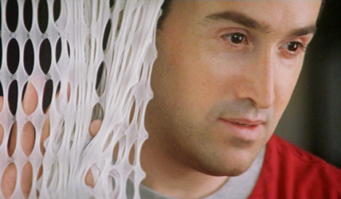
Javier Cámara - Benigno Martín
Darío Grandinetti - Marco Zuluaga
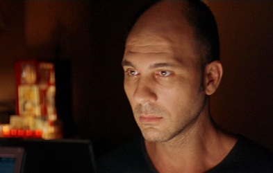
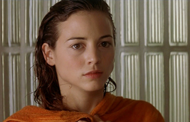
Leonor Watling - Alicia Roncero
Rosario Flores - Lydia González
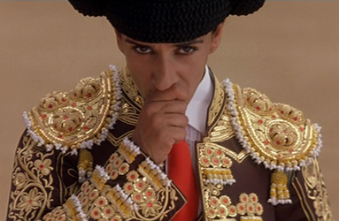
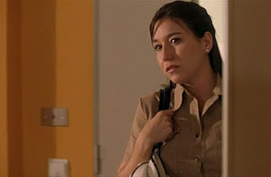
Lola Dueñas - Matilde
Chus Lampreave - Caretaker
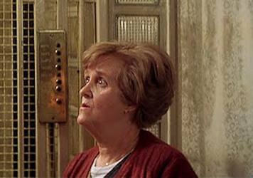
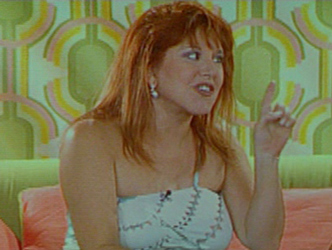
Loles León - TV presenter
Marisa Paredes - Party guest
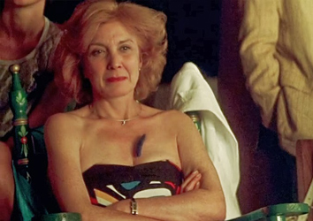
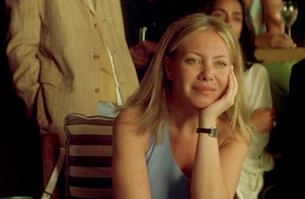
Cecilia Roth - Party guest
Himself (Singer at party)
Niño de Valencia
Doctor Vega
Agent of Niño de Valencia
Sacristan Boda
Mozo de espadas (Boy of swords)
Agustín Almodóvar - Priest
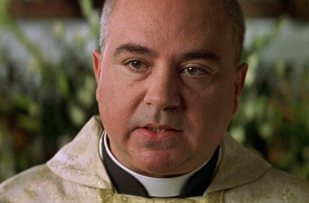
The story unfolds in flashbacks, giving details of two separate relationships that become intertwined with each other.
During a performance of Café Müller, a dance-theatre piece by Pina Bausch, Benigno Martín and Marco Zuluaga cross paths, but the two men are no more than strangers. Still, Benigno notices that Marco cries.
Marco is a journalist and travel writer who happens to see a TV interview with Lydia González, a famous matador. He thinks that an article on her would be interesting and, on the instructions of his editor, he contacts her in a bar, where she asks him to take her to her house. As they talk, she elaborates on the fact that she broke up with her boyfriend “el Niño de Valencia”, another matador, something that has been all over the tabloids. As Marco confesses that he knows nothing of bullfighting and that he is a journalist, she becomes angry and leaves his car without saying a word. As he drives off, he hears a scream inside her house and stops; Lydia rushes off and climbs back into his car: she asks him to kill a snake that she found in her house. He does so and comes out of the house crying. With that new confidence established between them, they become friends and, later on, lovers. Marco attends a wedding in Toledo and is surprised to find Lydia there too, since she had said that she did not want to go. The wedding turns out to be that of Marco's former fiancée, Ángela, who had the same phobia of snakes as Lydia; Marco was very much in love with Ángela and had a very hard time getting over her (which was the reason for his constant crying over things he could not share with her). Lydia says that she has something important to say, but she prefers to wait until after the bullfight that afternoon; but she is gored and becomes comatose. Marco does not leave her side at the hospital and finally befriends Benigno, who recognizes him from the dance-theatre performance. Marco is told by the doctors that people in a coma never wake up and that, while there are miracle-stories of people who have come back, he should not keep his hopes high.
Benigno is a personal nurse and caregiver for Alicia Roncero, a beautiful dance student, who lies in a coma, but Benigno sees her as alive; he talks his heart out to her, and brings her all kinds of dancing and silent black and white film mementos. As it turns out, Benigno had been obsessed with Alicia for a while, before she was in a coma, since his apartment is in front of the dance studio where she practiced every day. At first his obsession was only from a distance, since Benigno was taking care of his possessive mother, who seemed to be immobile. For that reason, he became a nurse and also a beautician. Free to move about after his mother dies, he finally picks up the courage to talk to Alicia, after she dropped her wallet on the street. As they walk together to her house, they talk about her discovery of silent black and white films and about dancing. When she walks into her building, Benigno notices that she lives in the house of Dr. Roncero, who is a psychiatrist. Benigno makes an appointment to see the doctor and talks about his unresolved bereavement grief over his mother. But it is all a ruse to gain access to the apartment, where he steals a hair-clip from Alicia's room. That night, Alicia is run over by a car and becomes comatose. By mere chance, Benigno is assigned to Alicia, much to the surprise of her father. But since Benigno's services are the best, he hires him and a colleague permanently to tend for Alicia. Benigno also tells Dr. Roncero that he is gay, possibly so that Alicia's father will not suspect his love for her, or possibly so that he will not question Benigno's particular attachment to her.
Benigno keeps telling Marco that he should talk to Lydia because, despite the fact that they are in a coma, women understand and react to men's problems. Eventually, Marco learns from “el Niño de Valencia” that Lydia and him had decided to be together again, and that she intended to tell Marco. So Marco finds himself alone again. As he is about to leave, he comes into Alicia's room, looking for Benigno, but he instead finds himself opening his heart out to her, despite his scepticism over Benigno's theories. Benigno and Marco leave the hospital and, in the parking lot, Benigno tells Marco of his plans to marry Alicia: Marco is taken aback, telling his friend that Alicia is basically dead and cannot express her will in any manner. But Benigno does not hear any reason. During a routine review at the hospital, the supervisors notice that Alicia has missed several periods; since this is a common occurrence with people in a coma, they do not think twice over it. In reality, Alicia was raped months before and is pregnant, Benigno is the main suspect and is later sent to prison.
Marco has left Spain to write a book about travelling. Months later, in Jordan, he reads in a newspaper that Lydia has finally died, having never awakened from her coma. He phones the hospital, looking for Benigno, only to hear that Benigno does not work there any more. Marco manages to talk to another nurse whom he had befriended; she tells him that Benigno is now in prison for the alleged rape of Alicia. Marco returns to Spain and visits Benigno, who asks him to hire a new lawyer and find out what happened to Alicia. Marco stays in Benigno's apartment and sees that Alicia has awakened during or after delivering a stillborn baby. Following the urging of Benigno's lawyer, Marco does not tell Benigno about Alicia's unexpected recovery. Desperate, Benigno writes a farewell letter to Marco and takes a large quantity of pills, to try to "escape" into a coma, thus reuniting with Alicia. He dies of an overdose.
Meanwhile, Alicia has begun rehabilitation to recover her ability to walk and dance. The film ends in the same theatre where it began, where Marco and Alicia meet by chance.
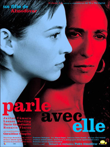
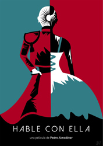
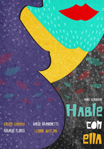
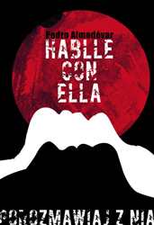
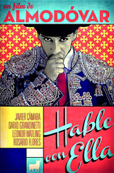
György Pálfi (2012) - Footage from this movie is used.
Antonio Carlos Jobim and Vinicius de Moraes - Performed by Elis Regina
k.d. lang